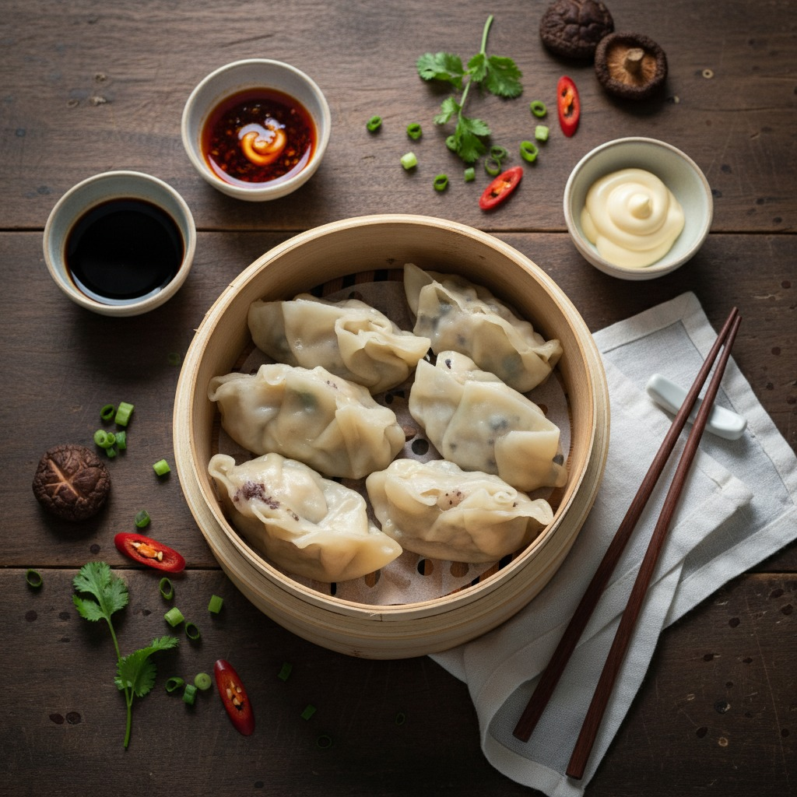

Dibuat dengan bahan-bahan terbaik pilihan dan resep rahasia keluarga. Setiap gigitan adalah petualangan rasa yang tak terlupakan.

Kami menjaga kualitas demi memberikan pengalaman makan terbaik untuk Anda.
Kami hanya menggunakan bahan baku halal dan segar harian tanpa pengawet buatan untuk menjamin rasa alami
Setiap hidangan diracik oleh juru masak profesional yang memahami standar rasa nusantara dan internasional.
Pesanan Anda dikemas dengan aman dan dikirim secepat mungkin agar tetap hangat sampai di meja makan.
Pesanan akan dibuat mendadak sesuai pesanan yang masuk. Membuat rasa lebih nikmat
Selain beroperasi secara offline, kami juga beroperasi secara online di Gofood, Grabfood dan Shopeefood
Harga sudah disesuaikan dan tentunya bersahabat bagi banyak orang
"Nasi gorengnya benar-benar enak! Rasanya berani, bener-bener enak bumbunya. Dengan Harga segini sangat worth!"
"Pertama kali beli ternyata dibonusin permen juga. Pelayanan satset banget dan rasa tentu enak"